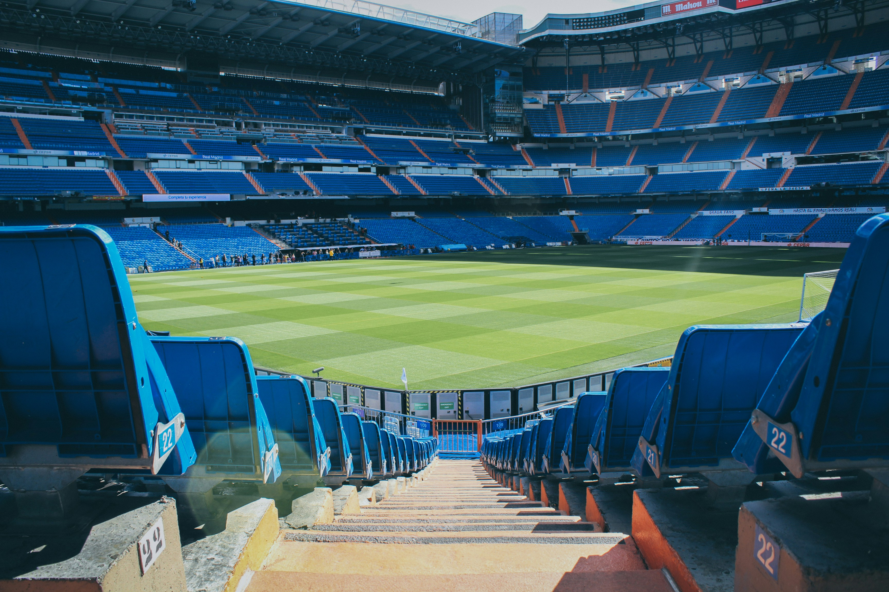
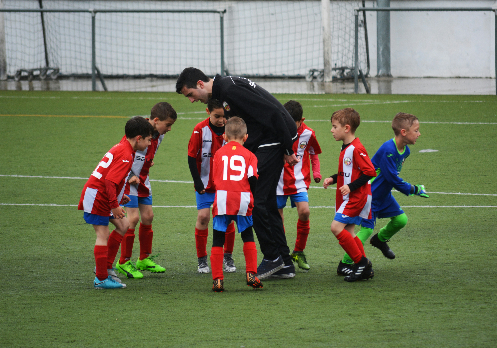

# A tibble: 20 × 2
Club SeasonGoals
<chr> <int>
1 Manchester City 82
2 Manchester United 70
3 Tottenham Hotspur 66
4 Liverpool FC 65
5 Leicester City 64
6 Leeds United 60
7 West Ham United 60
8 Chelsea 56
9 Arsenal 53
10 Aston Villa 52
11 Southampton 47
12 Everton 45
13 Newcastle United 44
14 Brighton 39
15 Crystal Palace 39
16 Wolverhampton Wanderers 34
17 West Bromwich Albion 33
18 Burnley 32
19 Fulham 26
20 Sheffield United 19COVID Football (English Premiership 2020/21 Season)
Lockdown Football
The COVID-19 pandemic significantly impacted English football, particularly the English Premier League (EPL), in various ways, including match operations, financial stability, and team performance.
1. Match Operations

One of the most immediate effects of COVID-19 on the EPL was the absence of crowds during matches. The 2020-2021 season saw teams playing behind closed doors, which altered the traditional home advantage that teams typically enjoy due to supportive fans. Research indicated that teams reliant on home support, such as Liverpool and Manchester United, were disproportionately affected by this change. The lack of crowd presence not only influenced the atmosphere but also had measurable effects on team performance metrics like goals scored and overall match outcomes (Thakur and Krithika (2023)).
2. Financial Impact

The pandemic also raised critical questions regarding the financial sustainability of football clubs. A study analyzing EPL revenues found that television revenues were the primary income source for clubs, followed by matchday and commercial revenues. The pandemic led to predictions of significant reductions in player salaries and market values due to decreased revenues, with estimates suggesting declines of 20% to 26% in player salaries and market values for the 2020-2021 season (Quansah et al. (2021)). This financial strain highlighted vulnerabilities within the football business model, particularly for clubs that depended heavily on matchday income.
3. Grassroots Football

While elite professional leagues like the EPL received attention and support during the pandemic, grassroots football faced severe challenges. The pandemic’s impact on local communities was profound, as many grassroots clubs struggled without financial assistance, leading to concerns about their long-term viability. The focus on elite football often overshadowed the needs of community-level clubs that play a crucial role in local engagement and well-being (Fitzpatrick et al. (2020)).
2020/21 Season in Review
After obtaining dataset of games played during the lockdown season, its time to explore briefly some interesting facts through analytics.
Goals Scored per Club (Table)
Goals Scored in per Club (Pie Chart)
Top Scorer Leaderboard - Goal Contributions
Name Club Nationality Position Matches GA
1 Harry Kane Tottenham Hotspur ENG FW 35 37
2 Bruno Fernandes Manchester United POR MF 37 30
3 Mohamed Salah Liverpool FC EGY FW 37 27
4 Son Heung-min Tottenham Hotspur KOR FW 37 27
5 Jamie Vardy Leicester City ENG FW 34 24
6 Patrick Bamford Leeds United ENG FW 38 24
7 Marcus Rashford Manchester United ENG FW 37 20
8 Ollie Watkins Aston Villa ENG FW 37 19
9 Kevin De Bruyne Manchester City BEL MF 25 18
10 Sadio Man\xe9 Liverpool FC SEN FW 35 18
11 Raheem Sterling Manchester City ENG FW 31 17
12 Callum Wilson Newcastle United ENG FW 26 17
13 Matheus Pereira West Bromwich Albion BRA MF,FW 33 17
14 Roberto Firmino Liverpool FC BRA FW 36 16
15 Jack Harrison Leeds United ENG MF 36 16
16 Dominic Calvert-Lewin Everton ENG FW 33 16
17 Jack Grealish Aston Villa ENG FW,MF 26 16
18 Danny Ings Southampton ENG FW 29 16
19 ?lkay G\xfcndo?an Manchester City GER MF 28 15
20 Riyad Mahrez Manchester City ALG FW 27 15
21 Michail Antonio West Ham United ENG FW 26 15
22 Alexandre Lacazette Arsenal FRA FW 31 15
23 Raphael Dias Belloli Leeds United BRA MF 30 15
24 James Ward-Prowse Southampton ENG MF 38 15
25 Chris Wood Burnley NZL FW 33 15Minutes Played vs. Goals Scored (Players with less than 10 starts)
Conclusion
In summary, COVID-19 has had a multifaceted impact on English football, particularly within the EPL. The absence of fans altered match dynamics and team performance, while financial pressures raised concerns about sustainability across all levels of football. Additionally, grassroots football faced significant challenges that could affect community engagement long after the pandemic subsides.
Research Text Prepared in Collaboration with Perplexity
References
Fitzpatrick, Daniel, Dan Parnell, Eleanor Drywood, David Cockayne, and Paul Widdop. 2020. Submission of Evidence on the Disproportionate Impact of Covid-19 on Grassroots Football: An Agenda to Protect Our Game and Communities.: Submitted to the Digital, Culture, Media and Sport Committee.
Quansah, Tommy, Bernd Frick, Markus Lang, and Kieran Maguire. 2021. “The Importance of Club Revenues for Player Salaries and Transfer ExpensesHow Does the Coronavirus Outbreak (COVID-19) Impact the English Premier League?” Sustainability 13 (9): 5154. https://doi.org/10.3390/su13095154.
Thakur, Vihang, and Dr. J Krithika. 2023. “Analyzing the Impact of Crowd Absence on English Football Team Performance During the Covid-19 Pandemic.” INTERANTIONAL JOURNAL OF SCIENTIFIC RESEARCH IN ENGINEERING AND MANAGEMENT 07 (10): 1–11. https://doi.org/10.55041/ijsrem26074.